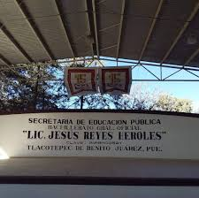

El Bachillerato Lic. Jesús Reyes Heroles es una institución de educación media superior ubicada en Tlacotepec de Benito Juárez, Puebla. Ofrece una formación integral a los estudiantes mediante el desarrollo de conocimientos, habilidades y valores. Su misión es preparar a los jóvenes para continuar con estudios superiores y contribuir de manera responsable al desarrollo de su comunidad. Además, fomenta la disciplina, el trabajo en equipo, el respeto y la participación en actividades académicas, culturales y deportivas.